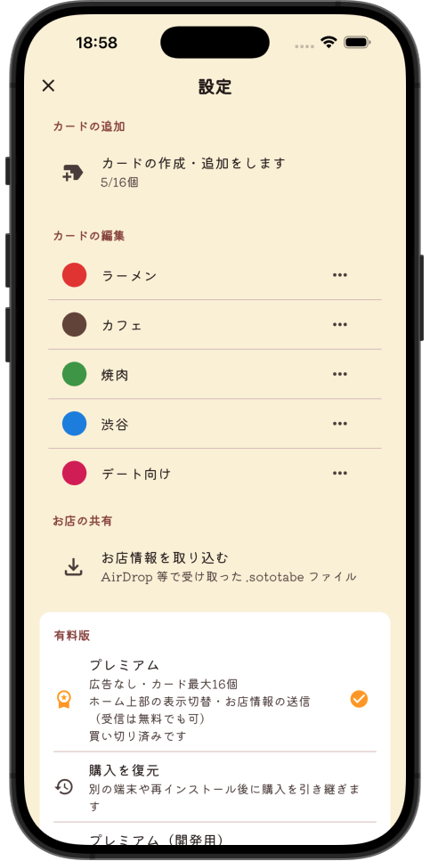
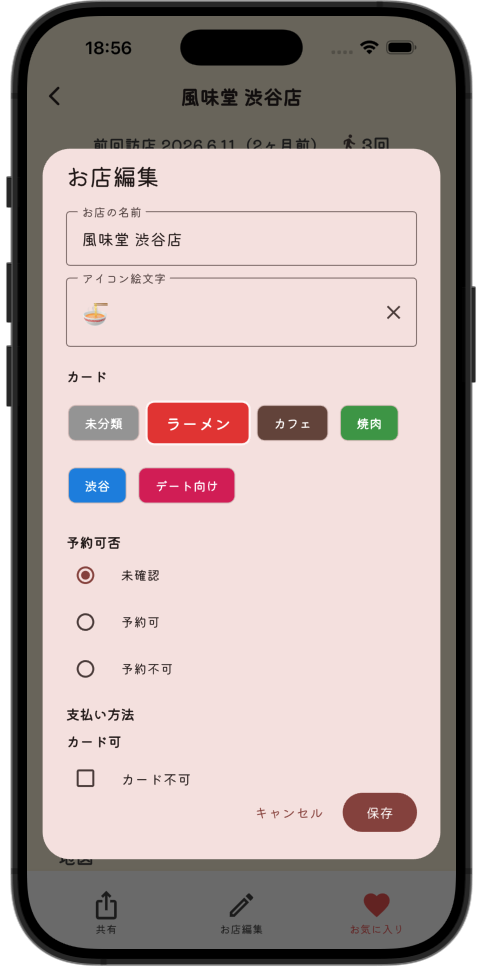
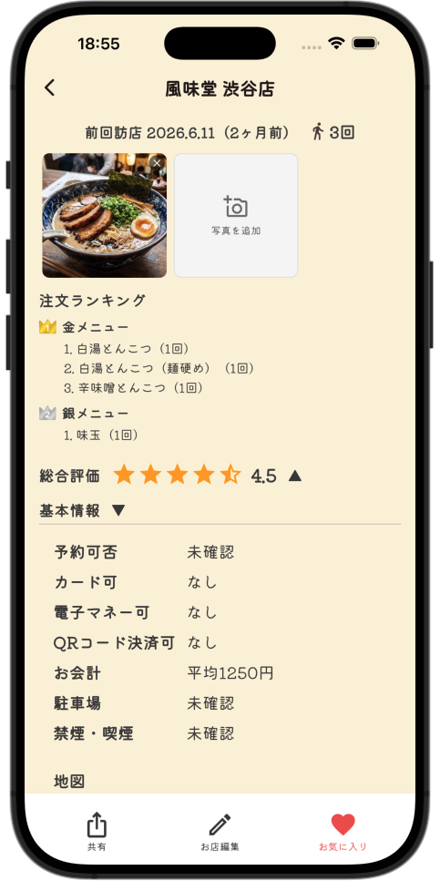
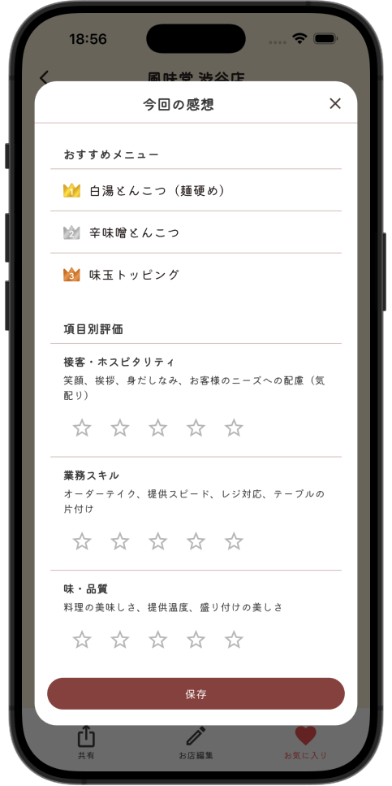
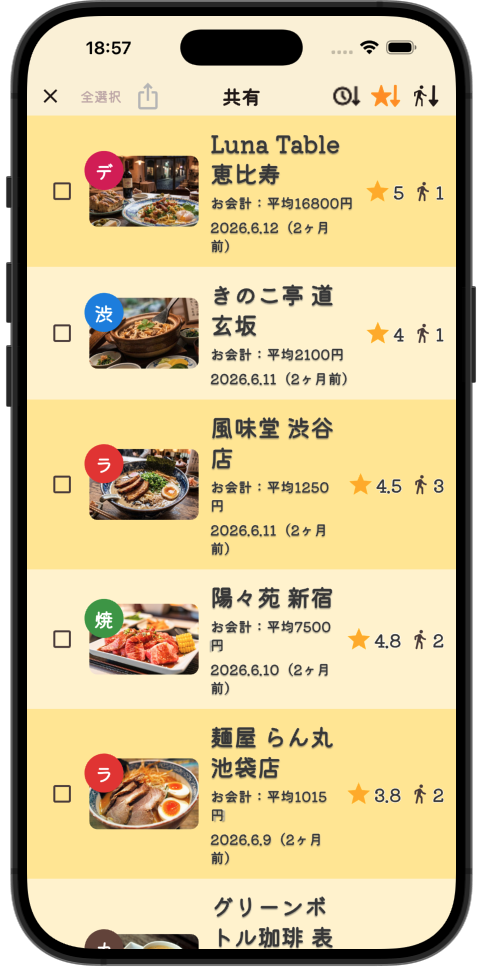

01 · CATEGORY
ジャンルも地区も、自分の分け方で。


ラーメン・カフェ、渋谷・横浜、「デート向け」など。色付きタブで見やすく整理できます。
WHAT YOU CAN DO
地図アプリの代わりではなく、自分用のお店リストと訪店記録のためのアプリです。
01 · CATEGORY


ラーメン・カフェ、渋谷・横浜、「デート向け」など。色付きタブで見やすく整理できます。
02 · VISIT LOG


今回の感想、項目別評価、レシート写真。何を食べたかも、あとから振り返れます。
03 · PRIVATE SHARE

SNSなどへの投稿機能はありません。お店情報は端末内の記録が基本で、相手もそとたべを入れているときだけ、ファイルで送れます（知らない人向けの公開はありません）。
04 · RECENT FIRST
お店一覧で最近訪れたお店を上から表示できます。すぐに「また行きたい店」を見つけられます。
HOW IT FITS YOUR DAY
難しい準備は不要。帰りの電車で、今日のお店をそっとメモできます。
A FEW NOTES
外食のお気に入り店をカテゴリ別に整理し、訪店メモ・評価・写真を残す、自分専用のお店日記アプリです。 SNS への投稿や公開フィードはなく、基本は端末内の記録だけです。
いいえ。Instagram や X などへの投稿機能はありません。 お店の記録・写真は自分の端末に残すためのものです。
知らない人との共有や、誰でも見られる公開はありません。 相手もそとたべをインストールしていれば、お店情報ファイルで渡せます。 受信（取り込み）は無料版でも利用でき、送信（共有）はプレミアム機能です。
どちらも SNS 投稿や見知らぬ人への公開はありません。 無料版は主要機能＋カテゴリ最大 3 個＋広告＋友だちからのお店情報の受信。 プレミアム（¥600・買い切り）は広告なし＋カテゴリ最大 16 個＋友だちへのお店情報の送信が使えます。
原則として端末内です。当方が運営するサーバーへ自動送信して保管することはありません。
iPhone / Android スマートフォン向けです。App Store 公開準備中です。